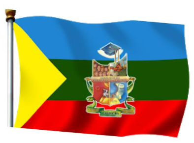

Escudo de la Institución
Escudo de la Unidad Educativa Emiliano Ortega Espinoza
El escudo institucional es un blasón dividido en cuatro cuarteles, cada uno con elementos que representan los pilares fundamentales de la educación en la institución.
Cuartel superior izquierdo: Contiene el rostro de Emiliano Ortega Espinoza, en honor al maestro, poeta y compositor lojano.
Cuartel superior derecho: Muestra una lámpara encendida, símbolo del conocimiento.
Cuartel inferior izquierdo: Representa la formación integral del estudiante.
Cuartel inferior derecho: Exhibe una probeta y un microscopio, símbolos de la ciencia.
Lema: "Técnica, Ciencia, Trabajo".
Bandera de la Institución

Bandera de la Unidad Educativa Emiliano Ortega Espinoza
La bandera institucional es un símbolo de identidad y orgullo.
Verde: Esperanza y crecimiento.
Amarillo: Conocimiento y luz.
Azul: Compromiso y formación integral.